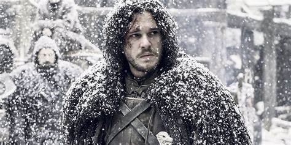
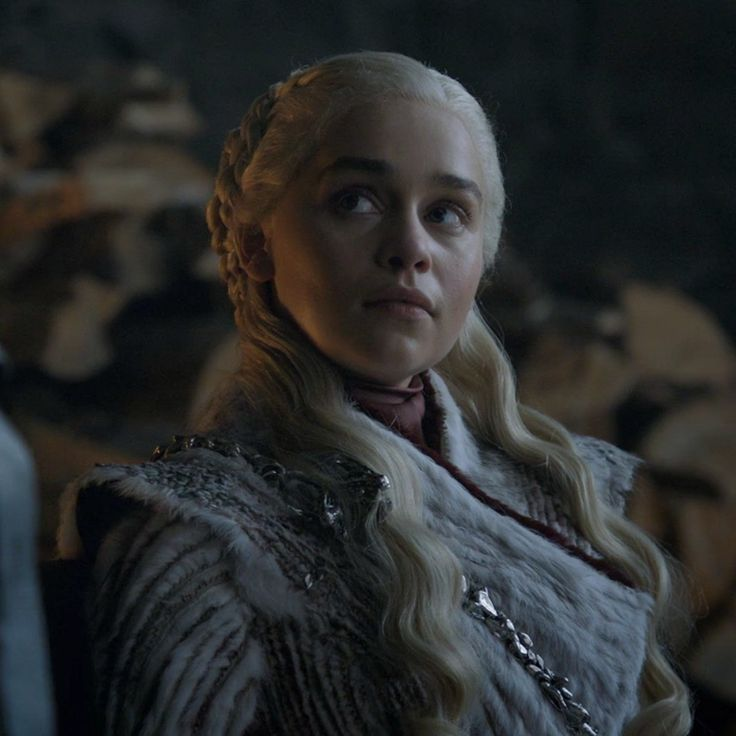
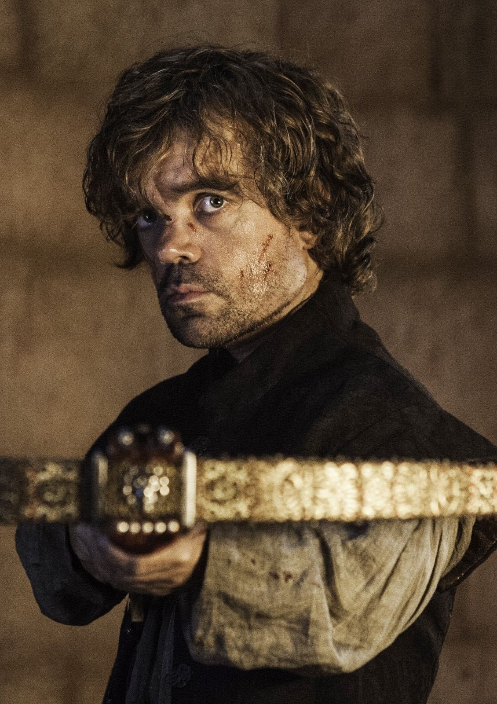
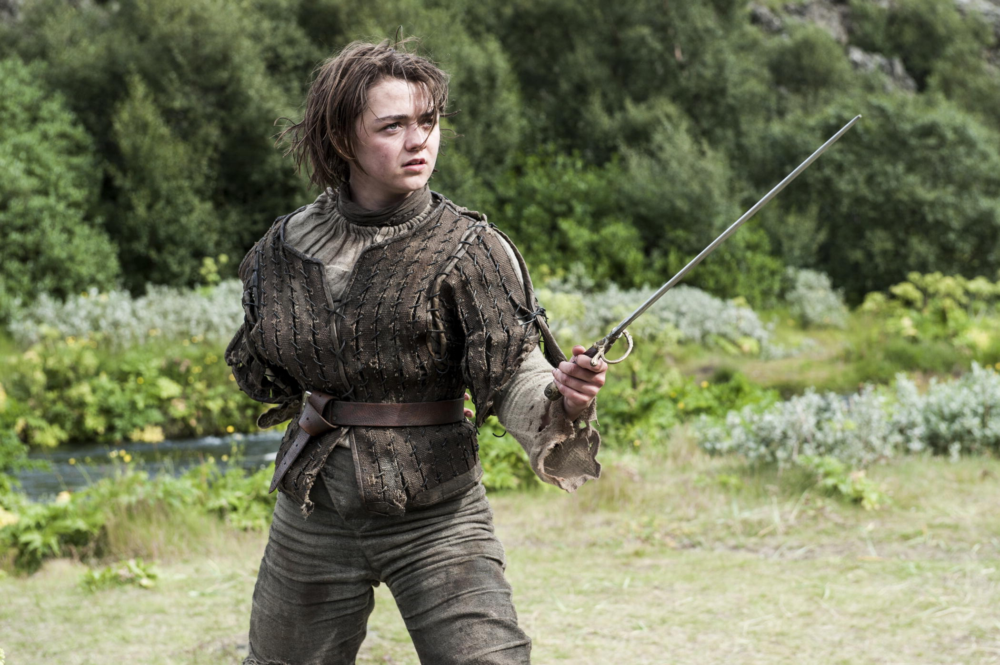

Main Cast
Here are some of the main characters of Game of Thrones:
-  Jon Snow:the brooding hero of Game of Thrones, rises from an outcast to a true leader, proving that honor and duty can shape the fate of kingdoms.
-  Daenerys Targaryen:the Mother of Dragons, transforms from an exiled princess to a powerful ruler, driven by her vision of breaking chains and reclaiming the Iron Throne.
-  Tyrion Lannister:the sharp-witted and often underestimated dwarf, uses his intellect and charm to navigate the deadly politics of Westeros, proving that size doesn't determine strength.
-  Arya Stark:the fierce and independent young warrior, embarks on a journey of vengeance and self-discovery, becoming one of the most skilled and deadly assassins in Westeros.